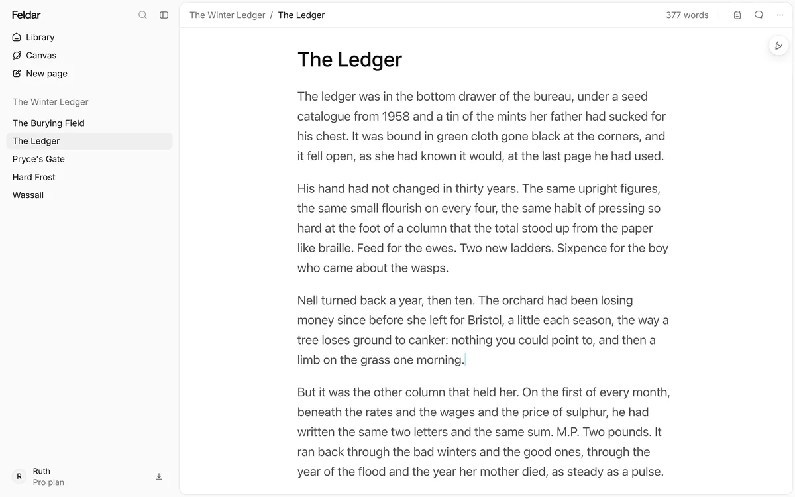

Location
Ashby's Orchard
Herefordshire. Foxwhelps in the low rows.
Feldar is a writing app for novelists. Your chapters, scene plans and story world sit beside the page, and every line the AI offers waits for your yes.
Free to start. 500 credits, no credit card.
The Winter Ledger Pryce's Gate
Nell found him in the cider house, sweeping round the feet of the press as if the floor had asked him to. She did not say good morning. She laid her father's ledger on the cold iron and turned it to face him, one finger under the entry for the first of March.
Daniel read it without bending. Then he leaned the broom against the wall with great care, the way a man sets down something he expects to need again. Daniel read it standing. Then he set the broom against the wall, carefully, like something he would need again.
"That is your father's hand," he said. "I would know those fours anywhere. It is not my place to tell you what it paid for." "Your father's hand," he said. "What it paid for is not mine to tell."
Outside, a cart went by on the frozen lane, and neither of them turned to look at it. A cart passed on the frozen lane. Neither of them looked up.
Demo. These words were written by hand for this page. In Feldar they come from your book.
01 / Plan
Every page in Feldar has an Outline. Say what happens next, pick how many scenes you want, and Generate scenes lays them out with titles and descriptions.
Edit, reorder, add or delete any scene. The plan is yours to change.
Write the chapter yourself with the scenes beside you, or press Draft Page for a first pass at the length you set.
How scene planning worksWhat happens next?
Nell takes the ledger to the cider house. Daniel will not say who M.P. is, and a hard frost is coming.
No scenes yet. Generate them here. In Feldar you can also write them yourself.
Daniel will not say
In the cider house Daniel refuses to name M.P. and sends Nell to his mother.
Fires in the low rows
They light smudge pots between the Foxwhelps all night. He starts a story about 1932, then stops.
Agnes at the gate
At first light Agnes is waiting at Pryce's Gate in her good coat.
The page of births
In Agnes's kitchen the family Bible lies open, and one name has no father beside it.
What Agnes kept
A biscuit tin holds thirty years of postal orders. Not one was cashed.

02 / World
The Canvas is a board of cards beside your manuscript. Link them with relations you name, and Feldar reads the board before it writes, so it works from the people and places you made.
Character, Location, Plot, Item, Faction and Note.
Select a card and Branch adds one that knows it: a related character, a place, an item, or the next plot beat.
How the Canvas works03 / Write
Select a passage and choose a direction. The rewrite arrives with every changed word in blue. Apply keeps it, and Undo puts yours back.
Polish tightens and clarifies. Deepen adds description, interiority and voice. Enhance raises tension, plants foreshadowing and improves dialogue.
Or say it in your own words, such as "slow it down", and review the change before it lands.
Paste a sample of 600 words or more and Feldar writes toward your voice. As the book grows, it follows the book.
AI for novelists04 / Revise
Checks runs five editing passes over the page and marks what it finds in the manuscript. Each mark comes with a fix to accept or discard. Opening Checks never changes your text.
05 / Read
Lens puts six readers beside the page: Critic, Cheerleader, Poet, Editor, Plotter and Reader. Call one by name with a mention, or let them debate.
Pick an audience and get a report of what they will remember and what they might ask, with markers in the margin. The audiences are general readers, fantasy readers, book club readers, creative writing students and literary magazine editors.
All features06 / Keep
The Writing record keeps a private account of which words you typed and which came through Feldar, with active days, time and the models used. It is there if a publisher, a contest or a workshop ever asks how the book was made.
Each book gets a cover in your Library. Pin the one you are finishing.
Import DOCX, PDF, Markdown or plain text, up to 20 MB a file. Export the whole manuscript or chosen pages in the same four formats.
Why Feldar records provenanceThe app
Everything above is a sketch you can play with. These are the app itself, with one book running through every shot: The Winter Ledger.



House rules
Every suggestion waits for Accept or Apply. Dismiss one and the page is as you left it.
Feldar never uses your manuscript to train AI models.
The words, drafts, notes and worlds you make in Feldar stay yours.
New AI writing is blue until you accept it, and the Writing record keeps a private account.
If credits run out, AI actions pause. Writing and export carry on.
Pricing
Every plan has the same workspace. Plans differ in credits, which only AI actions use. Writing, planning and organizing never use credits.
Free
500 credits to try everything. No credit card.
Start writing free$20 a month
20,000 credits a month, for regular drafting and revision.
$40 a month
45,000 credits a month, and every model in the catalog.
$200 a month
250,000 credits a month, for large manuscripts.
Compare
Each tool is good at a different part of the job. These pages say where Feldar fits, and where the other app is the better choice.
All comparisonsQuestions
Yes, to start. The Starter plan is free, with 500 credits and no credit card. Writing, planning and organizing never use credits. Paid plans start at $20 a month.
No. You write. Feldar offers lines, rewrites and feedback when you ask, in blue or in a card, and nothing joins your page until you accept it.
No. Feldar does not use your manuscript to train AI models, and what you write stays yours.
Yes. Import DOCX, PDF, Markdown or plain text, up to 20 MB a file.
In the browser, yes. The desktop app is for Mac, and it is native on Apple silicon.
Yes. Export the whole manuscript or chosen pages as DOCX, PDF, Markdown or plain text.
GPT-6 Astra, Sol and Luna, and Claude Opus 5.5, Sonnet 5.5 and Haiku 5.5. Which ones you can use depends on your plan.
Free to start. 500 credits, no credit card. Or watch the 67-second demo.
The smell does real work. But "careful hand" is the third time we are told he was careful. Trust the entries to show it.
"Never once a name" gave me a chill. That is a hook, and you set it in four words.
Mints and cold tobacco: keep that. Consider ending on "two pounds" and letting the silence carry the rest.
Tense and viewpoint hold. "There it was again" leans on a stock phrase. A plainer verb would keep the line yours.
Thirty years of payments starts a clock. Decide now when Nell learns who M.P. is, and plant one refusal before it.
I want to know who M.P. is, and I am a little afraid of the answer. I would turn the page.